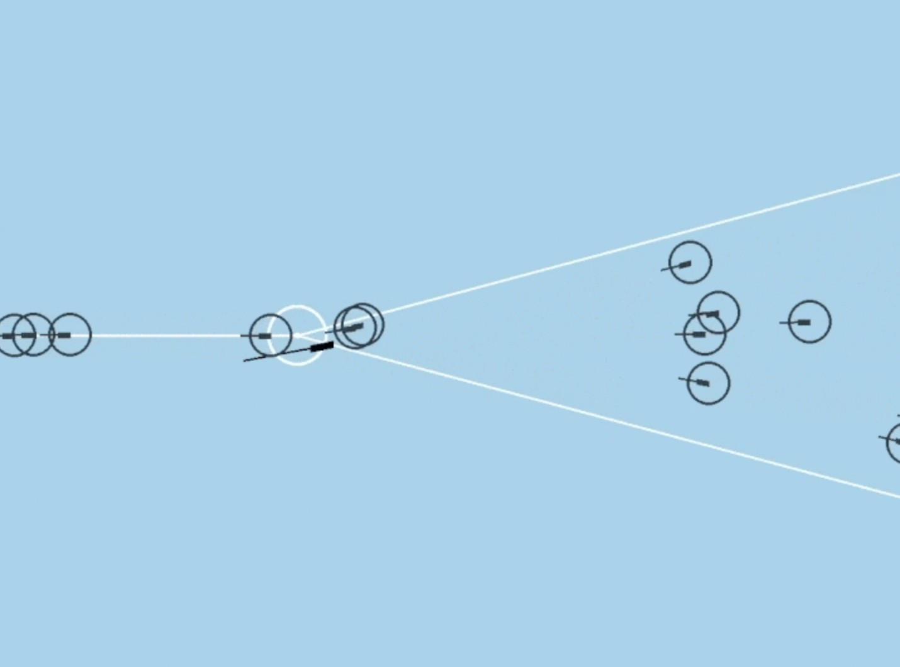
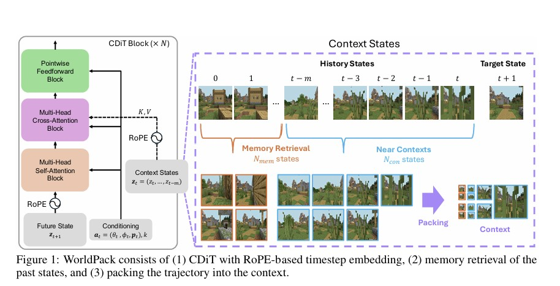
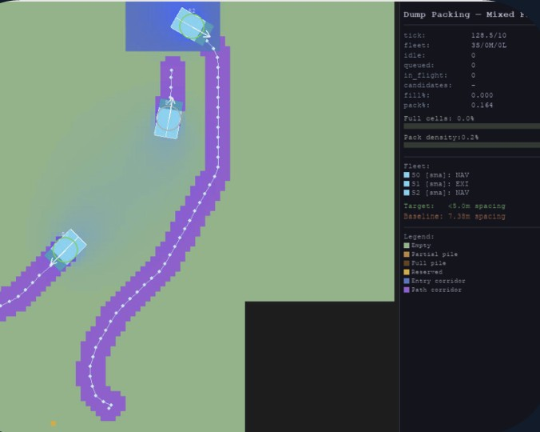

B.Tech, Mechanical Engineering
2024 — 2028
CGPA 9.03 / 10
I'm a B.Tech student in Mechanical Engineering at IIT Madras (2024–2028), working at the intersection of robotics, machine learning, and applied physics. My current research at the HiRo Lab, IISc focuses on making video world models more geometry-aware for closed-loop navigation. Alongside research, I build things — from a national-winning autonomous dump-truck simulator to CFD-optimized cooling systems for Formula Student. I care about work that connects rigorous modelling with something you can actually deploy.
2024 — 2028
CGPA 9.03 / 10
Selected projects and research I've worked on.



Led a team of 3 to a national win in the Caterpillar Challenge (7500+ competitors). A Python multi-agent simulator for autonomous dump packing solving task selection and optimal assignment via a Hungarian algorithm and MCTS, with vehicle dynamics and path planning for reverse maneuvers.


End-to-end mechatronics course project (ME2400): designed the pipeline, selected and integrated sensors/actuators, built CAD models, assembled the system, and programmed its functionality. Awarded best project in the batch by the former HOD, Prof. Chandramouli.
HiRo Lab, IISc · Prof. Ravi Prakash
Modifying, training and running inference on video world models (Gaussian World Model, DINOv3, π0.5). Innovated a memory-retrieval term for WorldPack, improving SSIM ~3.5% / LPIPS ~3% over baseline on LoopNav; prototyped RoPE, trajectory packing, and geometric/semantic attention conditioning on the NWM backbone.
Raftar Formula Racing, IIT Madras
Designed and manufactured aerodynamic components and cooling strategies; owned procurement, manufacturing and assembly of all carbon-fiber components while integrating vehicle dynamics and power electronics.
Inter-IIT Cultural Meet 8.0 · IIT Madras
Led an 8-member band as Music Director; represented IIT Madras as lead keyboardist, placing 4th among 23 IITs. ABRSM Grade 8 (Merit).
Interested in research collaborations, robotics, or just want to say hi? The quickest way to reach me is by email — I'll do my best to reply.